TRUST（TRUST: Item-Calibrated Interval Evidence for Temporal Session-Based Recommendation）关注时间会话推荐里一个很具体但经常被简化的假设：模型看到用户在某个物品上的停留或交互间隔后，是否应该直接把这个绝对时间当成兴趣强弱证据。论文来自 Linjiang Guo、Nitin Bisht、Shiqing Wu、Yifan Yin 和 Guandong Xu；一作主要机构为 University of Technology Sydney，合作机构包括 City University of Macau 与 The Education University of Hong Kong。论文入口链接：arXiv:2606.27214。本轮未核验到独立代码仓库；论文只给出了方法、实验设置与数据集处理口径。
已有时间会话推荐方法常把同一个绝对时间间隔视为跨物品可比较的兴趣信号，但论文的摘要和引言都指出这个假设不成立：每个物品有自己的时间间隔分布，同样的 10 秒可能对手机壳是正常浏览，对笔记本电脑或相机却是异常短停留。要让时间间隔成为可靠证据，模型必须先相对该物品的历史分布校准，而不是只看全局绝对值。
1. 背景和问题
会话推荐的目标是在一个短会话里预测下一次交互。传统 SBR 主要依赖物品共现、转移顺序、RNN、注意力或会话图结构；TSBR 在此基础上加入时间信号，常见做法是把停留时间、相邻交互间隔、时间戳或时间衰减嵌入到 item 表示、session graph 或 attention 权重中。时间信号的直觉很自然：用户对一个商品停留更久，可能说明兴趣更强；极短停留可能是误点、快速扫过或负反馈；过长间隔也可能意味着用户离开了当前意图。问题在于，很多方法把间隔的绝对值当成可横向比较的量，等价于默认“10 秒”在所有物品上有相近语义。
TRUST 的问题切口就是反对这个默认比较。论文用一个很容易理解的例子说明：同一位用户在笔记本电脑、手机壳、相机三个物品上都停留 10 秒。全局解释会把三次观测都看成相同兴趣证据；但如果笔记本电脑的典型参考时间是 200 秒，相机是 150 秒，手机壳是 10 秒，那么 10 秒只对手机壳像正常兴趣，对笔记本电脑和相机反而像异常短停留。这里的核心不是“停留时间越长越好”，而是“观察到的间隔是否符合该物品自己的历史节奏”。论文把这种相对一致性称为 temporal reliability。
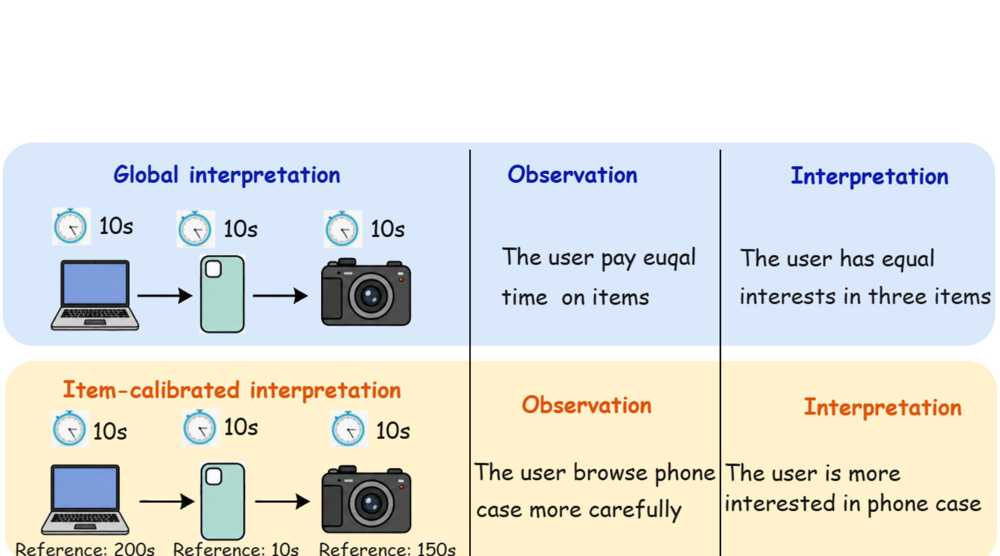
Figure 1 是整篇论文最重要的动机图。上半部分的全局解释把三个 10 秒观测都视为相同证据，因此会得出“用户对三件物品投入了相同时间、兴趣也相近”的结论；下半部分引入物品校准后，手机壳的 10 秒接近自己的参考时间，笔记本电脑和相机的 10 秒远低于各自参考时间，于是兴趣解释发生反转。这张图不是在给一个新的 dwell-time 规则，而是在说明绝对值本身不能直接跨物品比较。对推荐系统来说，这一点会影响召回图的邻居边、会话图的边权、最后一段兴趣聚合时到底看最近物品还是回看更早物品。若这些环节都使用未经校准的时间证据，模型可能把“物品天然浏览节奏不同”误读成“用户兴趣强弱不同”。
为了证明这不是单个例子，论文先做分布分析。它对 Diginetica、RetailRocket 和 Nowplaying 三个数据集中的每个物品收集历史间隔集合，对间隔做 log(1+d) 变换，再比较整体分布和物品级分布。如果全局间隔可比较，蓝色物品分布应该围绕红色整体分布变化不大；如果每个物品有明显不同的中心、离散度和尾部，绝对间隔就不能被直接当成统一尺度。
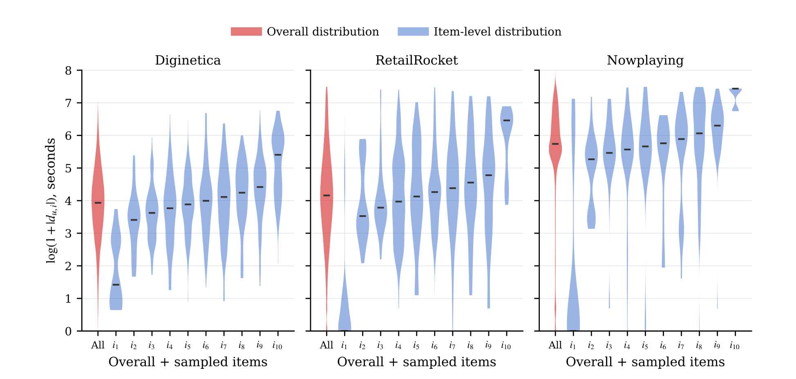
Figure 2 把这种差异画得很直观。红色小提琴是整体分布，蓝色小提琴是按物品中位数范围抽样的十个物品级分布。Diginetica 中蓝色分布的位置和尾部已经明显不一致；RetailRocket 的分布差异更分散；Nowplaying 中许多物品的间隔分布集中在较高区间，并和整体分布产生明显偏移。这里的观察说明，所谓“典型停留时间”并不是全局常数。同一个 log 间隔在整体分布里可能位于中间，在某个物品的分布里却可能落在尾部。对 TSBR 来说，这会导致两个风险：一是把本来可靠的物品内典型间隔压低权重，二是把物品内异常间隔误当成正常兴趣证据。更重要的是，三个数据集的形态并不相同，说明校准不能只依赖一个全站阈值，而应至少落到物品或物品簇这一层参照。
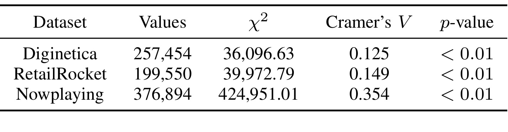
Table 1 用 aggregate-quantile goodness-of-fit test 把 Figure 2 的视觉结论变成统计证据。三个数据集的 p-value 都小于 0.01，说明“物品级间隔分布等同于整体分布”的原假设被拒绝；同时 Cramer’s V 在 Diginetica 和 RetailRocket 上分别为 0.125 和 0.149，在 Nowplaying 上达到 0.354，说明效应并不只是大样本带来的显著性。Nowplaying 的差异更强也符合直觉：音乐收听时长、切歌行为和商品浏览不同，物品间的时间节奏更可能被内容类型、歌曲长度和用户消费方式放大。这个表支撑了 TRUST 的第一层判断：先做物品级校准不是可有可无的技巧，而是时间信号进入推荐模型之前的尺度对齐。
论文又进一步问：物品级典型性是否真的影响推荐性能。作者构造了 matched perturbation 实验，把处在物品级两倍标准差范围内的 inside 交互和范围外的 outside 交互分组，并按照整体分布分位进行匹配，然后对间隔做同等扰动。如果 inside 交互被扰动后性能下降更明显，说明物品级典型间隔确实承载了更稳定的兴趣信息。
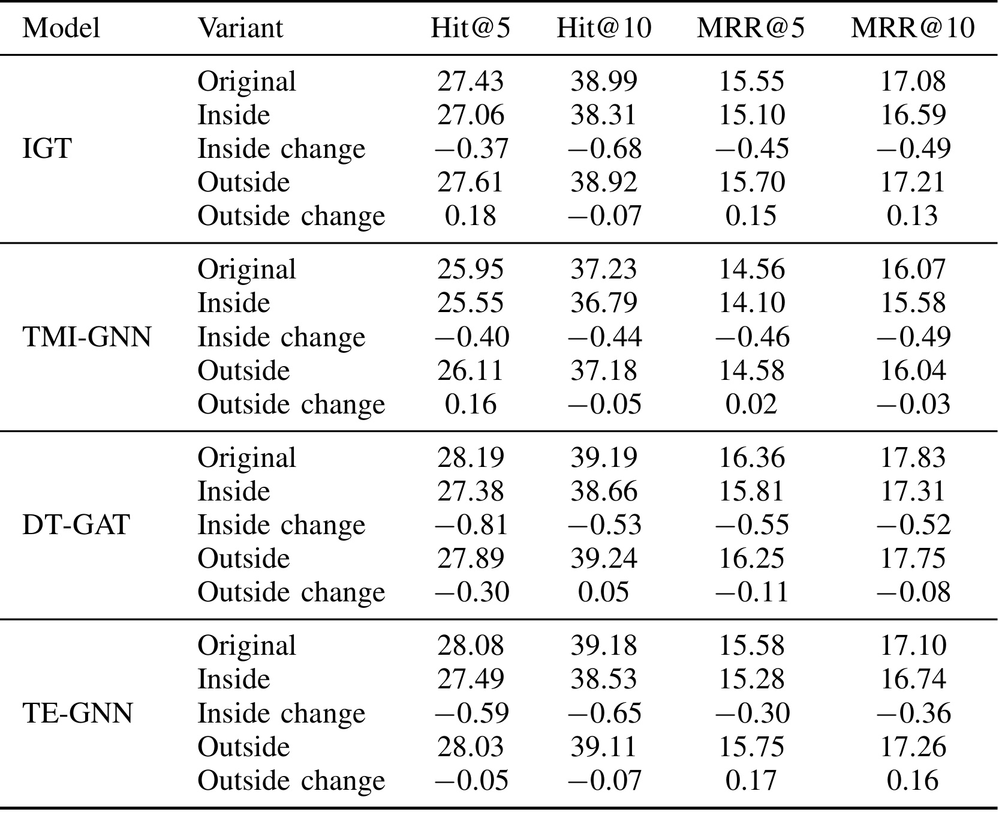
Table 1I 的证据很关键：在 IGT、TMI-GNN、DT-GAT、TE-GNN 四个时间会话推荐模型上，扰动 inside group 基本都会让 Hit 和 MRR 下降，而且 MRR@5 的下降尤其稳定；扰动 outside group 则没有一致下降，有时还出现轻微上升。这不是说异常间隔永远无用，而是说明“物品级典型区间”比“绝对时间看起来正常”更能稳定支撑短期意图建模。由此，TRUST 的问题闭环就成立了：第一，物品级分布不同；第二，典型性差异会影响已有 TSBR；第三，模型需要一个可插拔的 item-calibrated score，把观测间隔翻译成相对该物品的可靠性。这个实验也避免了只看分布图的弱点，因为它直接把校准假设和排序指标下降联系起来。
2. 方法
2.1 Item-Calibrated Temporal Scoring Function (ITSF)
TRUST 的方法从一个共享分数函数开始。输入是物品 i 的历史间隔分布以及当前观测间隔 d_i，输出是一个可靠性分数 q_i(d_i)。这个分数不是简单地把 d_i 映射到短、中、长，也不是学习一个全局时间嵌入，而是先查看 d_i 在该物品自己的经验分布中处于什么分位，再把离中心越远的分位映射为越低可靠性。论文还加入样本数校正：如果物品 i 的历史观测很少，模型不应过度相信这个物品级分布，因此惩罚会被放松。
符号解释：q_i(d_i) 是物品 i 上间隔 d_i 的 temporal reliability；z_i(d_i) 是把该间隔在物品级经验分布中的分位转成标准正态坐标后的偏离量；n_i 是物品 i 的历史间隔观测数；epsilon_q 是数值稳定常数；gamma 控制偏离越大时可靠性衰减得多快。分母里的 1+1/sqrt(n_i+epsilon_q) 是一个保守项：n_i 小时分母更大，|z_i| 的有效惩罚变小；n_i 大时，分布估计更可信，偏离会被更严格地惩罚。这个设计对长尾物品很重要，因为只看少量观测就强行判定“异常”会带来冷启动式误伤。
符号解释：\hat F_i 是物品 i 的经验间隔分布，log(1+d_i) 让长尾时间更平滑；clip 把经验分位裁到 rho 和 1-rho 之间，避免分布两端映射到无穷大；\Phi^{-1} 是标准正态分布的反函数。换句话说，ITSF 不是问“这个间隔是不是 10 秒”，而是问“这个间隔在该物品的历史节奏中离典型区域有多远”。这一步是 TRUST 后续所有模块共用的证据翻译层：先把绝对时间变成物品内可靠性，再让图结构和兴趣聚合使用这个可靠性。
2.2 RaNS 与 RcSG
有了 ITSF，TRUST 首先把它用于全局共现图。传统全局图会把训练会话中相邻出现的物品连接起来，但相邻共现可能来自可靠兴趣，也可能来自误点、极短停留或不符合该物品节奏的行为。RaNS 的思路是用可靠性加权边，只有累计可靠性超过阈值 p 的邻居才进入候选，再按权重采样 w 个邻居。公式写作：
符号解释：\tilde N_g(i) 是物品 i 的可靠邻居集合；N_g(i) 是全局图中的所有邻居；O_{i->j} 和 O_{j->i} 是两个方向的相邻观测；omega_{i,j} 同时聚合共现频次和每次观测的物品级可靠性。若候选邻居为空，模型保留 self-loop；若候选数不足 w，会先全量包含再按权重补采样。这样，全局协同信号不再只由“出现过多少次”决定，还由“这些共现是否发生在对应物品的可靠时间节奏中”决定。
符号解释：m_i^{(g)} 是全局图分支给物品 i 的消息；h_i、h_j 是物品表示；W_g、w_g、b_g 是可学习参数；a_{ij}^{(g)} 是门控权重。这里 ITSF 不直接改图卷积公式，而是在采样前先过滤与加权邻居，因此它控制的是“哪些协同证据能进入表示学习”。
局部会话图 RcSG 则把 ITSF 放进有向 session graph 的边注意力。每个会话被看作按交互顺序连接的图，边表示从一个物品转到下一个物品。若只使用 item embedding 或原始间隔，模型仍然无法知道该转移时间对当前物品是否可靠；RcSG 把 q_i(d_i) 投影成时间特征，与相邻物品表示一起进入 edge score。
符号解释：m_i^{(s)} 是局部会话图消息；N_s(i) 是当前会话图中物品 i 的出边邻居；beta_{ij}^{(s)} 是归一化注意力；T(q_i(d_i)) 把标量可靠性映射到 d 维时间特征；h_i \odot h_j 表示元素乘。这个模块解决的是局部转移建模：同样是 i 到 j 的边，如果 i 上的停留时间是物品内典型，边就更像真实兴趣转移；如果时间位于物品内尾部，边就可能是噪声。
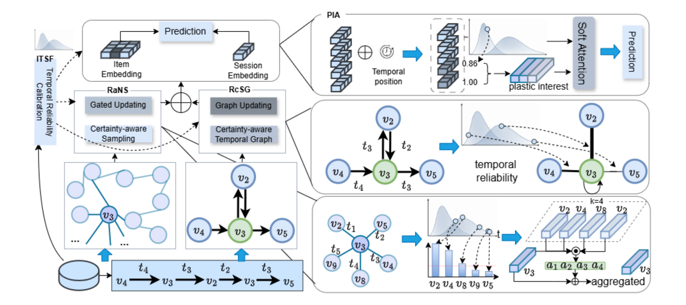
Figure 3 把三个模块的顺序串起来。左侧先从历史行为估计 item-specific interval distribution，得到 ITSF；中间上路是 RaNS，从全局图里采样可靠邻居，减少噪声共现进入协同表示；中间下路是 RcSG，在会话图边上使用可靠性权重，区分本会话内部的转移质量；右侧是 PIA，用可靠性决定短期兴趣聚合时看最近物品还是向前回看。图中最值得注意的是，TRUST 并没有把时间信号只当作一个额外特征拼接到最后，而是把同一个校准分数分别放进全局图、局部图和 session representation generation。这样的设计让论文的实验可以做清楚消融：去掉任一处可靠性校准，性能应当下降；完全去掉 ITSF，三处模块都失去校准基准。
2.3 Plastic Interest Aggregation (PIA) 与训练目标
最后一个模块 PIA 处理会话表示生成。许多 SBR 方法用最后一个物品作为短期兴趣 query，但最后一次交互未必可靠：它可能是误点，也可能只是快速浏览。PIA 的做法是先把全局和局部图消息以及反向位置嵌入融合成物品表示：
符号解释：\bar h_i 是融合后的第 i 个位置表示；p_{\ell_i}^{(rev)} 是反向位置嵌入，越接近会话末尾位置越小。接着，PIA 给每个位置一个可靠性分数。为避免数据泄漏，最后一个位置的分数固定为 1，因为它没有后继间隔可用；其他位置使用 q_i(d_i)：
PIA 为不同深度 b 分配从最后一个物品向前看的权重。直观上，小 b 只看最近且可靠的若干交互；大 b 可以继续向更早位置扩展，但扩展量仍受可靠性约束。
符号解释：xi_i^{(b)} 是深度 b 下第 i 个位置分到的可靠兴趣权重；bar xi_i^{(b)} 是归一化后的权重；q_p^{(b)} 是 depth-specific plastic query。递归从后往前计算，保证最近位置优先，但不会无条件相信最近位置。若最近几步可靠性低，权重会自然向更早但可靠的物品转移。PIA 的核心价值是把“短期兴趣”从固定最后一项，改成由可靠性控制的多深度兴趣查询。
随后，每个 q_p^{(b)} 对会话内所有物品做 additive attention，得到不同深度的 session representation，再平均融合：
训练目标仍是 next-item prediction 的 full item softmax：
符号解释：s 是最终会话表示；v^* 是真实下一物品；h_j 是候选物品嵌入；hat y_j 是打分；L 是交叉熵损失。TRUST 的训练目标并不特殊，特殊之处在于生成 s 的过程已经用物品校准时间证据过滤了全局邻居、会话边和兴趣聚合路径。对工程实现来说，这也意味着 ITSF 可以先离线预计算，训练时更多是查表、二分和向量化操作，而不是新增一个复杂可学习时间网络。
3. 实验结果
实验使用 Diginetica、RetailRocket 和 Nowplaying。Diginetica 是电商点击序列，包含页面停留时间；RetailRocket 保留 view events；Nowplaying 是音乐收听序列。预处理遵循会话推荐常规：去掉长度为 1 的 session，过滤出现少于 5 次的 item，保留每个 session 最后一个 item 作为预测目标。指标为 HR@5、HR@10、MRR@5、MRR@10，全部用百分比报告。baseline 分为非时间 SBR 和时间 SBR：前者包括 GRU4Rec、NARM、SR-GNN、FGNN、S2-DHCN、MSGAT、DMI-GNN 等，后者包括 STAN、TASRec、TE-GNN、IGT、TMI-GNN、DT-GAT。
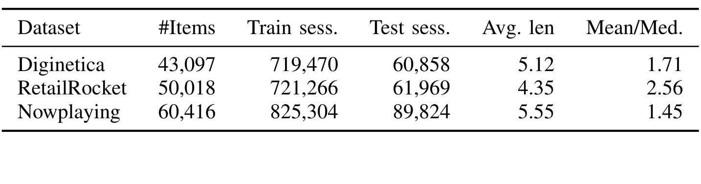
Table 1II 的 Mean/Med. 很值得看。Diginetica、RetailRocket、Nowplaying 的平均长度分别为 5.12、4.35、5.55，说明三个任务都属于短会话场景；Mean/Med. 分别为 1.71、2.56、1.45，表明时间间隔分布有不同程度的偏态。RetailRocket 的比值更高，意味着均值比中位数拉得更远，长尾时间或少数长停留更明显；Nowplaying 的 session 更多，物品也更多，但 Mean/Med. 较低。这个表提醒我们，不同数据集的“时间证据形态”本来就不同，TRUST 后续在超参 w 和 gamma 上表现出的数据集差异，不应被简单看成随机波动。
主结果回答 RQ1：TRUST 是否优于非时间和时间 baseline。Table 1V 显示 TRUST 在三个数据集几乎所有指标上最佳，并且对第二名的多数差异通过 paired t-test。以 Diginetica 为例，TRUST 的 HR@10 为 41.79，MRR@10 为 18.82，相对第二名提升分别为 +4.06% 和 +5.08%；RetailRocket 上 HR@10 为 59.87，MRR@10 为 40.22；Nowplaying 上 HR@10 为 17.35，MRR@10 为 8.40。
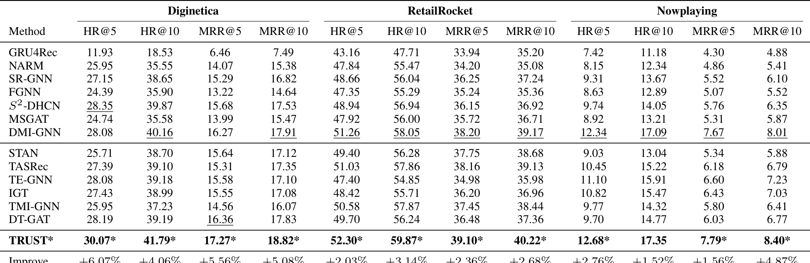
Table 1V 里还有一个比“TRUST 最好”更有意思的现象：时间 SBR 不总是赢过强非时间模型。例如 DMI-GNN 在 Diginetica 和 Nowplaying 上很强，部分时间模型反而低于它。这说明原始时间间隔不是天然正收益，直接把时间特征塞进模型可能引入噪声。TRUST 的收益更像来自“先校准再使用”，而不是来自“用了时间信号”。对于实际推荐系统，这个区别很重要：如果线上只把 dwell time 或间隔作为连续特征送入排序/序列模型，可能把内容类型、物品复杂度和用户上下文混在一起；TRUST 说明至少要考虑物品级、类目级或曝光场景级参考分布。
RQ2 检验 ITSF 是否只对 TRUST 有效。作者把 ITSF 插入四个已有时间 SBR backbone：IGT、TE-GNN、TMI-GNN、DT-GAT，保持其他 session representation、训练目标和实现细节不变，只替换原始 interval 使用方式。结果显示，四个模型在 Diginetica 和 Nowplaying 的 HR@10、MRR@10 都有提升。
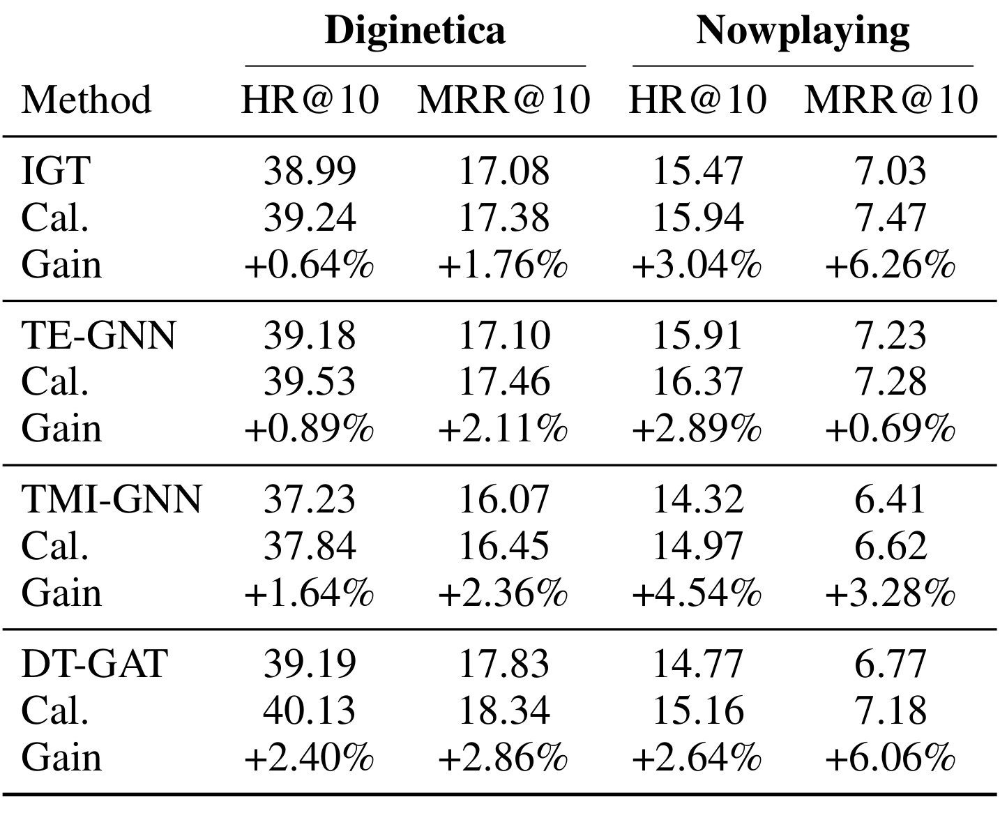
Table 5 支撑了论文“model-agnostic”的说法。IGT 在 Nowplaying 上 MRR@10 从 7.03 到 7.47，增幅 +6.26%；DT-GAT 在 Nowplaying 上 MRR@10 从 6.77 到 7.18，增幅 +6.06%；Diginetica 上各模型也都有正收益。由于这些 backbone 原本就使用时间信号，ITSF 的作用不是从无到有增加时间特征，而是改变时间信号的尺度。换句话说，原始 interval 被替换成“相对物品历史分布的可靠性”后，已有模型也能受益。这一点提高了 TRUST 思路的可迁移性：工程上未必需要完整迁移 RaNS、RcSG、PIA，先把现有时间特征做物品校准，也可能是低成本试验路径。
RQ3 做模块消融。变体包括：w/o RaNS cal，用均匀共现频次采样替代可靠邻居采样；w/o RcSG cal，移除会话图边上的时间可靠性；w UniPIA，保留多粒度聚合但把 PIA 可靠性权重设为 1；w LastQ，用传统 last-item query 替代 PIA；w/o ITSF，用原始绝对 interval 替换物品校准分数。
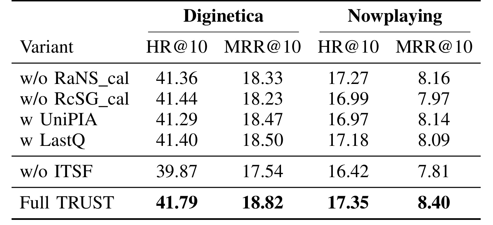
Table 5I 的结果显示，每个变体都低于 Full TRUST，但下降幅度不同。w/o ITSF 的下降最明显，Diginetica HR@10 从 41.79 降到 39.87，Nowplaying HR@10 从 17.35 降到 16.42，说明 ITSF 是三个下游模块共用的根信号。移除 RaNS 或 RcSG 也会下降，分别说明全局共现图和局部会话图都需要可靠性筛选。PIA 相关变体更细：UniPIA 仍保留多粒度结构，所以并没有崩；LastQ 在 Diginetica 上接近 full model，但 Nowplaying 上弱一些，说明某些数据集里最后一项已经足够强，而另一些场景需要更灵活地回看早期可靠兴趣。这个消融让方法解释更加可信：TRUST 不是单靠一个大框架堆模块，而是 ITSF、图结构和兴趣聚合之间有可测的分工。
RQ4 分析两个超参：全局邻居采样大小 w 和 ITSF 衰减指数 gamma。w 控制每个物品从可靠全局邻居里采样多少邻居；gamma 控制当观测间隔偏离物品级典型区域时，可靠性下降得多快。作者在主实验中根据验证集选择 w，gamma 最终取 2.0。
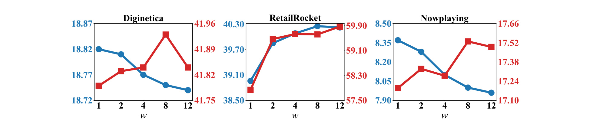
Figure 4 显示 w 的效果有明显数据集差异。Diginetica 中 HR@10 随 w 增大略有提升，但 MRR@10 在较小 w 时更稳；RetailRocket 对更大 w 更敏感，HR@10 和 MRR@10 都随 w 增大而改善，说明这个数据集可能需要更多全局协同邻居；Nowplaying 的 HR@10 在较大 w 处更好，但 MRR@10 逐渐下降，暗示音乐场景中采样过宽可能损害头部排名精度。这个图提示实际部署时不能把 w 当成固定常数，应根据业务的共现密度和 session 噪声调参。对于电商短会话，邻居更多可能补足稀疏行为；对于内容消费，过宽邻居可能把主题或场景差异混入短期意图。它还说明 RaNS 的收益来自“可靠邻居集合”与“采样数量”的共同作用，阈值、采样数和数据稀疏度需要一起看。
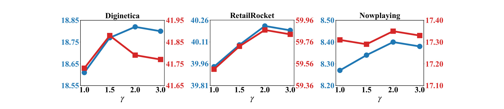
Figure 5 的趋势比 w 更稳定。三个数据集上，MRR@10 大体从 gamma=1.0 到 2.0 改善，到 3.0 后持平或略降。gamma 太小会让偏离惩罚不够，异常间隔仍可能被当作可用证据；gamma 太大则可能过度惩罚中等偏离，把仍有信息的长尾行为压低。作者选择 gamma=2.0，相当于用接近 Gaussian 的衰减在鲁棒性和区分度之间折中。这个超参解释了 ITSF 的边界：它不是把非典型区间一刀切丢弃，而是连续降权；真正被丢弃或保留，还要看 RaNS 的阈值、RcSG 的注意力和 PIA 的深度分配共同作用。
最后看效率。TRUST 增加了两类成本：ITSF 的一次性离线预计算，以及 PIA 的多粒度兴趣聚合。Table 5II 在 Diginetica 上比较每 epoch 时间和收敛 epoch。TRUST 每 epoch 439 秒，收敛 14 个 epoch；DT-GAT 每 epoch 488 秒但只需 8 个 epoch；IGT 每 epoch 323 秒，TE-GNN 182 秒，TMI-GNN 209 秒；ITSF 预计算额外 37 秒。
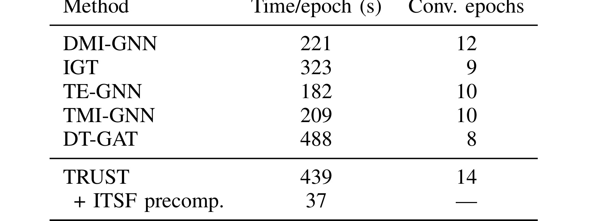
Table 5II 说明 TRUST 不是“免费提升”。它比多数 temporal baseline 更重，尤其 PIA 和两个图分支会增加训练开销。不过 ITSF 预计算只有 37 秒，论文强调训练时可以用预排序数组上的向量化 binary search，不需要为可靠性分数再学习一个复杂模型。工程上可以把 TRUST 拆成两个层次评估：第一层只做 ITSF 插件，成本低且 Table 5 已证明跨 backbone 有收益；第二层再引入 RaNS、RcSG、PIA，换取完整模型性能。若线上系统对延迟和训练周期敏感，先在离线训练特征或召回图构造阶段引入物品级时间校准，可能比完整替换 session model 更现实。因此这个表给出的不是否定结论，而是实施优先级：先复用校准分数，再决定是否承担完整图模型和多粒度聚合的训练成本。
4. 总结
4.1 我的判断
TRUST 的贡献不是提出一个庞大的新会话推荐架构，而是把一个常被忽略的测量问题讲清楚：时间间隔作为隐式反馈时，必须有参照物。对物品浏览、视频观看、音乐收听、内容阅读这类业务，同样的停留时间本来就会被内容长度、复杂度、用户目标和场景影响。论文用 Figure 2、Table 1 和 Table 1I 证明绝对时间不可直接比较，再用 ITSF 给出一个足够简单的校准函数，最后把校准信号注入全局图、会话图和兴趣聚合。这个链条完整，也便于工程团队分阶段复现。
我最看重的是 Table 5。完整 TRUST 有训练成本，但 ITSF 插件实验说明“先做物品级经验分位校准”本身就能带来稳定收益。对已有推荐系统来说，可以先不动主模型，把 dwell time、播放时长、停留间隔、点击后返回时间等行为信号转成相对 item 或 item-category 的分位可靠性，再观察召回、排序或序列模型是否更稳。这个方向也适合和用户建模结合：同一物品的典型时间是一层参照，用户自己的典型行为节奏又是另一层参照，二者可能共同决定一个行为是否可靠。
4.2 工程启发与局限
第一，论文的 item-specific distribution 对长尾物品仍然脆弱，虽然 Eq.1 用 n_i 放松惩罚，但真实线上还会遇到新物品、突发热点、价格变化和内容改版。更稳的版本可能需要 item、category、creator、duration bucket 或 semantic cluster 的层级贝叶斯参考分布。第二，TRUST 只在公开离线数据集上验证，线上是否能提升点击、成交、播放完成率或长期满意度仍未核验。第三，时间间隔本身可能混入曝光位置、网络延迟、页面结构和用户离开 app 等外部因素；如果日志没有清洗这些噪声，物品级校准也可能学习到平台交互偏差。第四，PIA 更重，若系统已经有强大的序列 Transformer 或多兴趣网络，完整 TRUST 的增益与成本需要重新评估。
后续可以跟进三条线：一是复现 ITSF 插件实验，把已有 TSBR 或业务序列模型的原始 interval 特征替换成物品级分位可靠性，优先看 MRR/NDCG 这类头部排序指标是否变稳；二是把 item-specific 参照扩展为 category-level 与 user-level 双参照，检查长尾和冷启动是否更稳；三是做在线日志诊断，统计不同行业、内容时长、价格带、类目下的 dwell-time 分布差异，确认“绝对时间不可比”在真实业务中到底有多强。TRUST 给出的结论应被理解为一个校准范式，而不是固定架构处方；真正落地时，最值得迁移的是“先相对参照分布解释时间，再把解释后的可靠性送入推荐链路”。